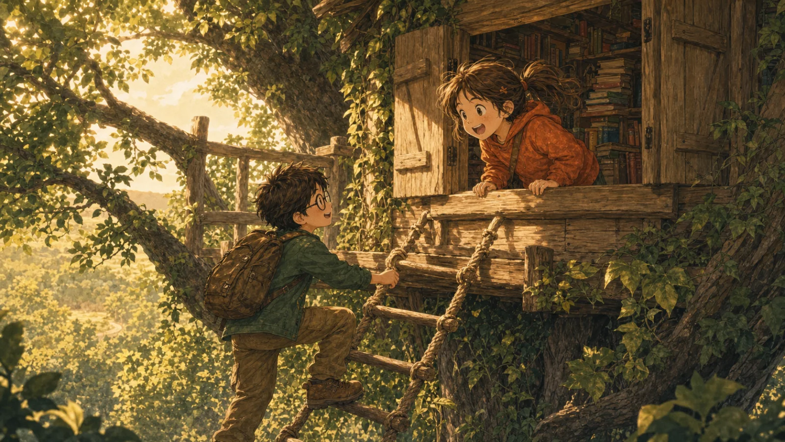
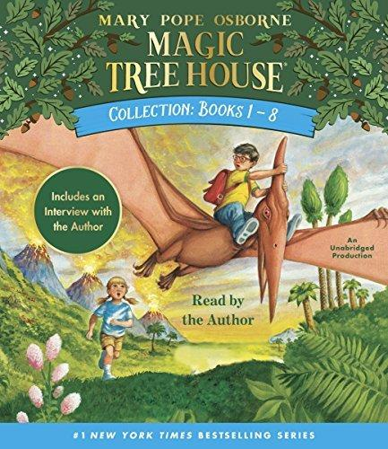
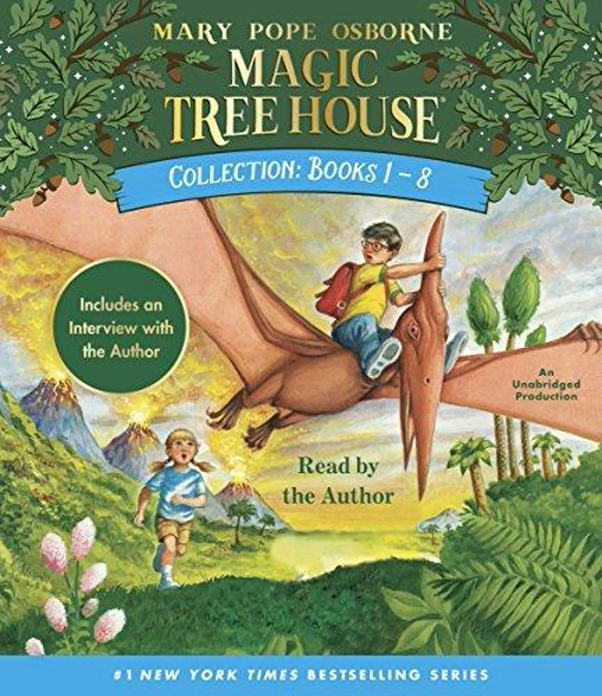
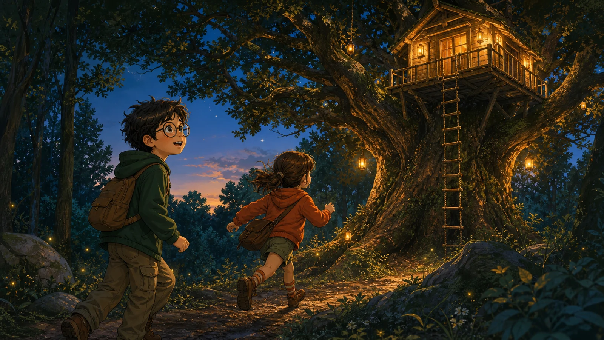

BOOK 1 · 恐龙时代
Dinosaurs Before Dark
《勇闯恐龙谷》
10 章 · 30 个剧情场景 · 原版有声书《勇闯恐龙谷》英文原著精读营
Climb into the tree house, open a mysterious book, and travel with Jack and Annie to a world before time.

从首页进入任意一册，阅读进度会分别保存。

《勇闯恐龙谷》
10 章 · 30 个剧情场景 · 原版有声书《古堡惊魂夜》
10 章 · 30 个剧情场景 · 原版有声书
《木乃伊之谜》
10 章 · 30 个剧情场景 · 原版有声书《加勒比海盗》
10 章 · 30 个剧情场景 · 原版有声书
《忍者的秘密》
10 章 · 30 个剧情场景 · 原版有声书《亚马孙探险》
10 章 · 30 个剧情场景 · 逐章同步音频他们是兄妹，却有完全不同的性格。
男孩，安妮的哥哥。他谨慎、好学，喜欢记笔记，总想先搞清楚事情再行动。
"“Wait,” said Jack."
女孩，杰克的妹妹。她大胆、热情，相信直觉，乐于与每一种动物交朋友。
"“Come on!” said Annie."
选择合适语速，跟随真实录音阅读。
当前句子与单词会随声音同步变化。
读完即练，带着问题回原文找答案。